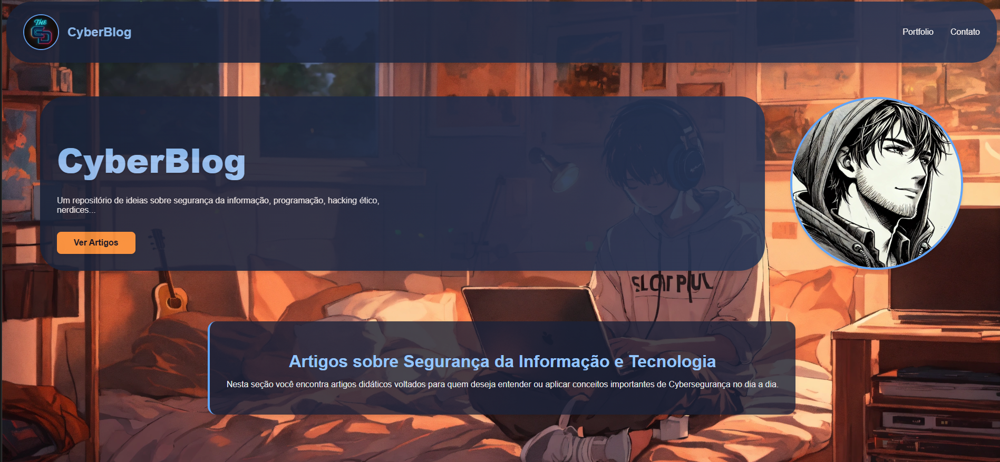
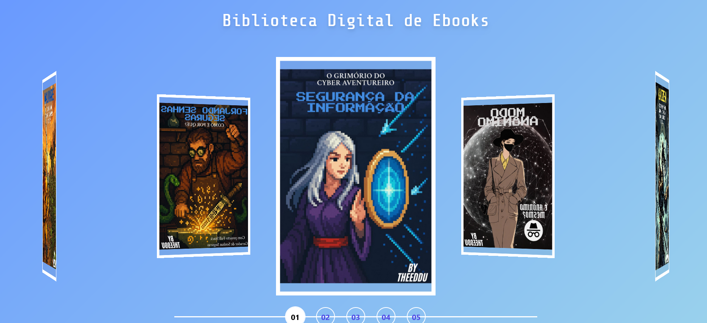
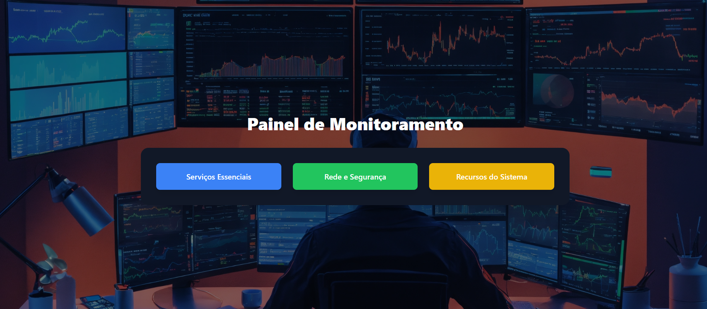
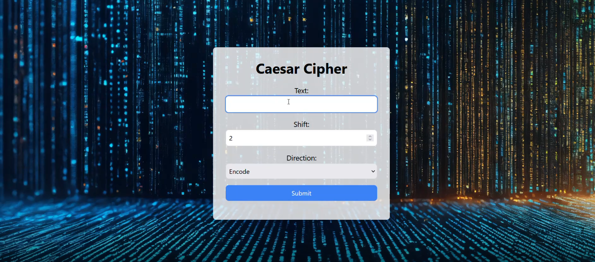
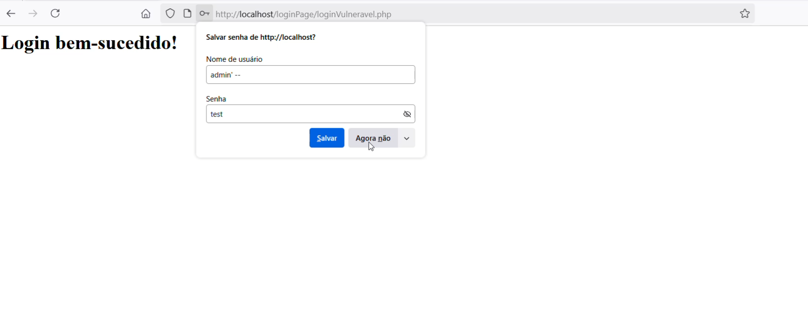
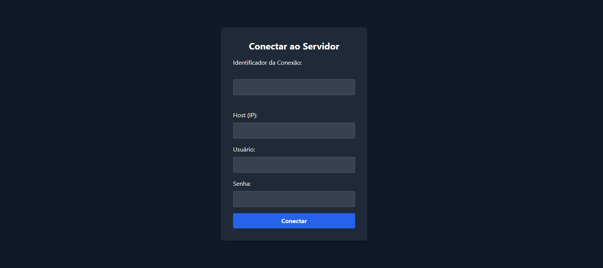

Cyber Blog
Blog pessoal dedicado a artigos aprofundados sobre diversos temas, com foco em conteúdo didático e acessível.
- Artigos originais com explicações práticas
- Visualmente simples e interativo

Blog pessoal dedicado a artigos aprofundados sobre diversos temas, com foco em conteúdo didático e acessível.

Plataforma pessoal para compartilhar meus eBooks com navegação intuitiva e download de PDF.

Dashboard para monitoramento em tempo real de serviços do sistema, sem necessidade de comandos manuais.
Repositório →
Ferramenta educativa para demonstração de algoritmos de cifragem e decifragem, com opções personalizáveis.
Repositório →
Exemplo didático de página de login vulnerável a SQL Injection, com versão corrigida para ensino de segurança web.
Repositório →
Painel web backend para gerenciamento remoto de conexões SSH a máquinas Linux virtuais, ideal para demonstrações, labs e ensino de automação.
Repositório →